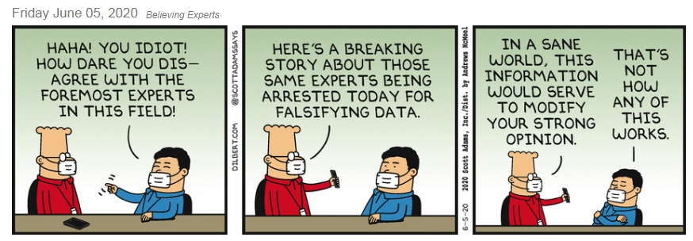

The truth is that science is against evolution.
The truth is that science is against evolution.| Evolution in the News - June 2020 |
| by Do-While Jones |
If you can't believe a 15-year-old, who can you believe?
Science used to be a reliable way to determine the truth. Now science has been corrupted to be nothing more than the opinion of people who claim to be intellectually superior. This change was precipitated by the theory of evolution because the theory of evolution doesn't meet the traditional definition of science. There is no experimental or observational evidence for the theory of evolution. The theory of evolution is merely speculation about what happened in the unobservable past through an imaginary method that cannot be demonstrated in the laboratory. This has opened the door for credibility to be given to all sorts of false ideas simply because "scientists say" they are correct, without any real science to back up the claims.
Here is some evidence we believe supports our claim.
This month's Email column contains an argument by JB's evolutionist friend in which he confuses evolutionary speculation with science. Although his email is an actual example of evolutionary delusion, one might try to write him off as unrepresentative because we don't know his name or his background; but we believe him to be typical because we have heard similar arguments from so many other evolutionists, and we believe you have probably heard similar things from evolutionists, too.
A friend of mine has a daughter who graduated at the top of her class from a prestigious Bay Area university in California. When my friend introduced his daughter to an older woman, his daughter was highly offended because the woman told my friend, "I can see she is a very special young lady." His daughter had never heard the term "special" used in any other context than Special Olympics or special education. She thought the woman was calling her "gifted" (which is another politically correct term for "retarded"). The word "special" has lost its meaning through intentional misuse. In the same way, the word "scientist" has become a politically correct synonym for "lackey."
There have been many brilliant young people in the past and present. Wikipedia lists 24 musical prodigies who accomplished great things before the age of ten 1 and 39 competitors who became chess grandmasters before fifteen. 2 There have been some brilliant young scientists, too.
|
Blaise Pascal (1623-1662) was a French mathematician, physicist, and religious philosopher who wrote a treatise on vibrating bodies at the age of nine; he wrote his first proof, on a wall with a piece of coal, at the age of 11 years, and a theorem by the age of 16 years. He is famous for Pascal's theorem and many other contributions in mathematics, philosophy, and physics. Srinivasa Ramanujan (1887-1920), was an Indian mathematician and autodidact who, with almost no formal training in pure mathematics, learned college-level mathematics by age 11, and generated his own theorems in number theory and Bernoulli numbers by age 13 (including independently re-discovering Euler's identity). 3 |
Today's foremost climate scientist, who has the ear of some world leaders, is young Greta Thunberg. In case you haven't heard of her, here are some excerpts from the Wikipedia article about her.
|
In August 2018, at age 15, she started spending her school days outside the Swedish parliament to call for stronger action on climate change by holding up a sign reading Skolstrejk för klimatet (School strike for climate). ... She has received numerous honours and awards including: honorary Fellowship of the Royal Scottish Geographical Society; Time magazine's 100 most influential people and the youngest Time Person of the Year; inclusion in the Forbes list of The World's 100 Most Powerful Women (2019) and two consecutive nominations for the Nobel Peace Prize (2019 and 2020). ... Thunberg says she first heard about climate change in 2011, when she was eight years old, and could not understand why so little was being done about it. The situation made her depressed. She stopped talking and eating, and lost ten kilograms (22 lb) in two months. Eventually, she was diagnosed with Asperger syndrome, obsessive-compulsive disorder (OCD), and selective mutism. In one of her first speeches demanding climate action, Thunberg described the selective mutism aspect of her condition as meaning she "only speaks when necessary". Greta struggled with depression for three or four years before she began her school strike. When she started protesting, her parents did not support her activism. Her father said he does not like her missing school but said: "[We] respect that she wants to make a stand. She can either sit at home and be really unhappy, or protest, and be happy". ... In May 2018, Thunberg won a climate change essay competition held by Swedish newspaper Svenska Dagbladet. In part, she wrote "I want to feel safe. How can I feel safe when I know we are in the greatest crisis in human history?" ... Her speech during the plenary session of the 2018 United Nations Climate Change Conference (COP24) went viral. 4 She commented that the world leaders present were "not mature enough to tell it like it is". 5 |
Greta Thunberg is considered to be an expert on the danger of climate change, worthy of numerous awards and two nominations for the Nobel Peace Prize. But she has done no original research. She doesn't know anything. All she has done is repeat what she has been told by people with a political agenda.
She is a "special" little girl who is being passed off by liberal politicians as a "scientist." She hasn't done anything except to be frightened to death by some fear mongers. But this little girl, who hadn't even graduated from high school, wasn't afraid to tell world leaders at the United Nations that they were "not mature enough to tell it like it is".
Why does anybody listen to what she says? Is it because she has scientific proof of what she says? Or is it because she is a frightened snowflake? By her own admission she is completely dominated by fear of what some "scientists say."
She isn't a real scientist. She didn't solve Fermat's Last Theorem 6 or cure cancer. She is just a frightened little girl who was nominated for the Nobel Peace Prize because she is good at frightening other people by repeating what she was told by some fear mongers. That's no reason to listen to her.
During their heyday, evolutionists claimed that teaching creation in public schools would be the end of science as we know it, which would lead to the decline of the United States and the end of civilization. 7 Instead, teaching evolution in the public schools led to substituting speculation for experimentation, which led to accepting nonsense as scientific fact.
In January, 2020, the United States was enjoying remarkable prosperity. The economy collapsed in less than four months--not because people were too sick to go to work, or too sick to leave their homes to go shopping. It wasn't illness that caused the economy to collapse. It was the political response to the fear that resulted from the words of "scientists" (political lackeys).
In James Bond movies, the villain is often a mad scientist who uses technology to rule the world and make it the way he thinks it should be. In real life, "scientists" are the villains who use fear to take away your car, French fries, soft drinks, plastic straws, schools, sporting events and concerts in order to rule the world and make it safe the way they think it should be.
In the 1960's, people thought scientists were never wrong--because they were never wrong. They sent men to the moon. Now so many people claiming to be scientific experts are wrong so often that the public doesn't believe scientists any more. Scientists have earned a bad reputation by selling out and shilling for politicians. The "scientists" who warned us about the coming "snowball earth" were replaced by "scientists" warning us now about global warming (and scaring poor little girls like Greta).
We aren't the only ones who have noticed it. Scott Adams ran this Dilbert cartoon on June 5, just 11 days before this newsletter was published.
|
 |
|---|
Science hasn't been science since the theory of evolution was declared to be scientific. Consensus replaced experimental proof, which allowed opinion to masquerade as fact. The theory of evolution is a "fact" only because all the "real scientists" say it is. The truth is that science is against evolution.
| Quick links to | |
|---|---|
| Science Against Evolution Home Page |
Back issues of Disclosure (our newsletter) |
| Web Site of the Month |
Topical Index |
Footnotes:
1
https://en.wikipedia.org/wiki/List_of_child_music_prodigies
2
https://en.wikipedia.org/wiki/Chess_prodigy
3
https://en.wikipedia.org/wiki/List_of_child_prodigies
4
https://www.youtube.com/watch?v=KAJsdgTPJpU
5
https://en.wikipedia.org/wiki/Greta_Thunberg (May 15, 2020)
6
https://en.wikipedia.org/wiki/Fermat%27s_Last_Theorem
7
Disclosure, May, 2005, "Desperate Evolutionists"